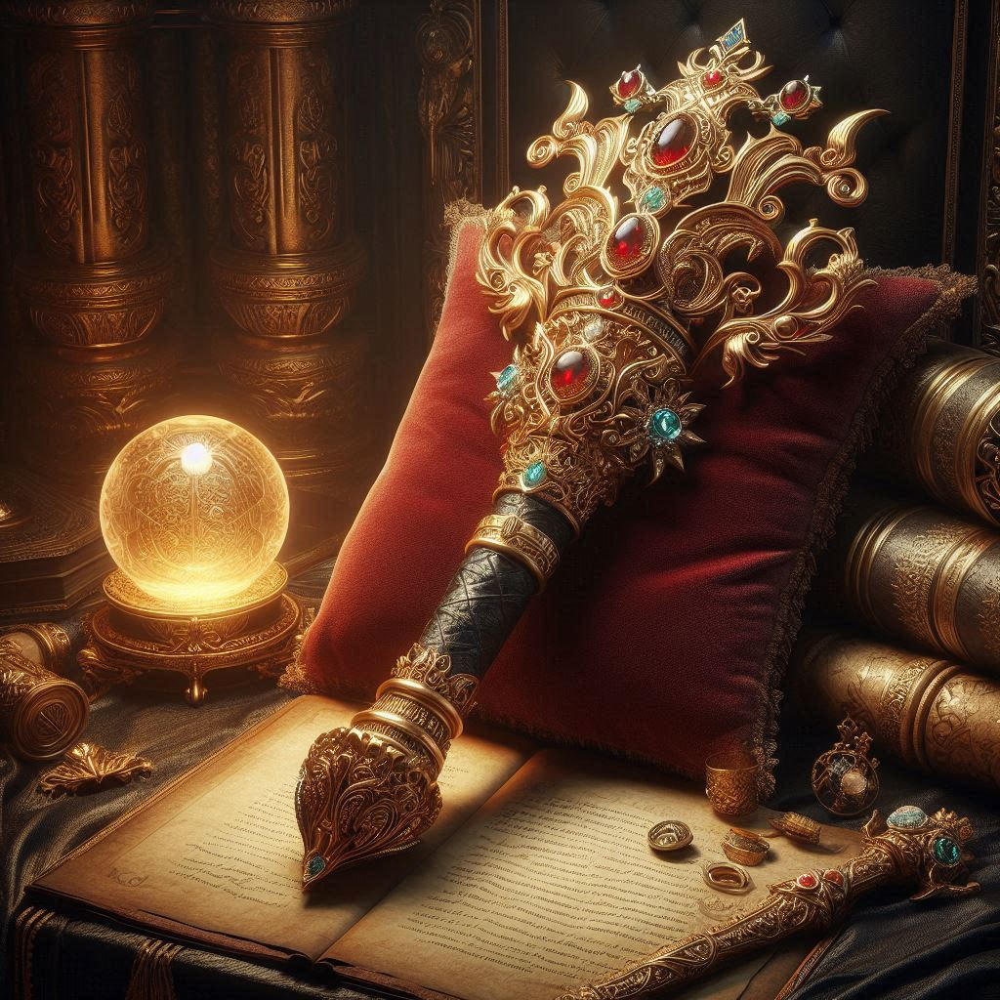

A hatalom jogara
A világ hajnalától kezdve legendák keringtek a hatalom jogaráról, egy ősi relikviáról, amely képes volt irányítani a természet erőit, formálni a sors szövedékét, és beteljesíteni az ember legmélyebb vágyait. Eddig azonban senkinek sem sikerült megtalálnia, mert a jogart egy ismeretlen helyen rejtették el, amit misztikus próbatételek és veszélyek őriznek.
Calen, a fiatal kalandor, egész életében a régi tekercsek és ősi mondák rabja volt. A hatalom jogarának titka rabul ejtette a lelkét, s a vágy, hogy rátaláljon, soha nem hagyta nyugodni. Egy reggel, mikor a nap először szökött fel az ég peremére, Calen elhatározta, hogy útra kel, és megkeresi azt, amit mások puszta mesének tartanak. Tudta, hogy útja veszélyekkel, árulással és talán magányos kétségbeeséssel lesz teli, de a remény csillaga égett a szívében, mint egy soha ki nem alvó láng.